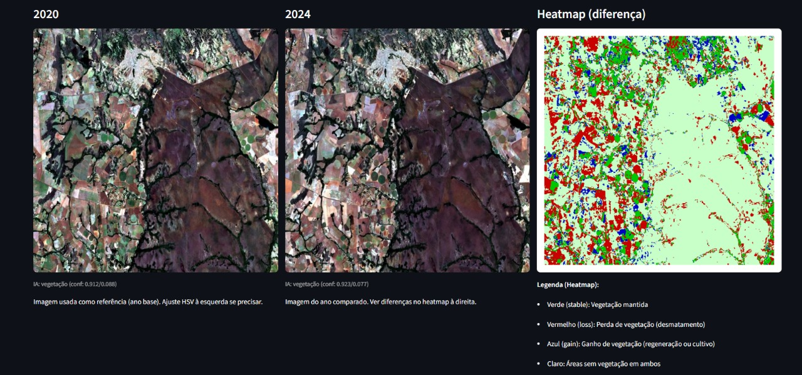
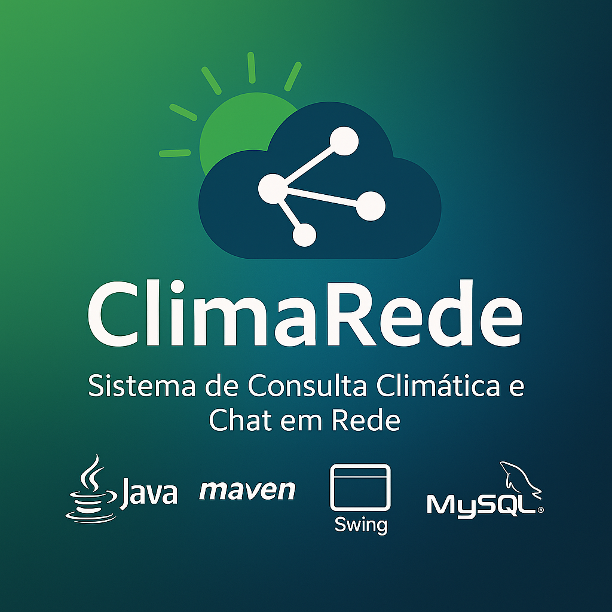

Projetos Recentes

Automação de BPO Financeiro
Robô RPA 100% local desenvolvido em Python para executar de forma autônoma o envio de relatórios financeiros via web. A solução lê diretórios, trata os arquivos e orquestra os envios, eliminando gargalos manuais da operação.
Python
RPA
PyAutoGUI
Pandas

EcoVision Cerrado
Sistema de análise ambiental que utiliza IA e Visão Computacional para identificar vegetação e áreas de desmatamento no Cerrado através de imagens Sentinel-2.
Python
OpenCV
Streamlit
NumPy

ClimaRede
Aplicação desktop desenvolvida em Java para consulta climática em tempo real via APIs REST, com interface intuitiva e recursos adicionais de comunicação entre usuários.
Java
API REST
MySQL
Swing